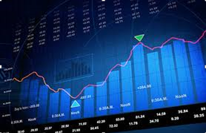

artificial intelligence
Finance and economics

Financial institutions have long used artificial neural network systems to detect charges or claims outside of the norm, flagging these for human investigation. The use of AI in banking can be traced back to 1987 when Security Pacific National Bank in US set-up a Fraud Prevention Task force to counter the unauthorized use of debit cards. Programs like Kasisto and Money stream are using AI in financial services.
Banks use artificial intelligence systems today to organize operations, maintain book-keeping, invest in stocks, and manage properties. AI can react to changes overnight or when business is not taking place. In August 2001, robots beat humans in a simulated financial trading competition. AI has also reduced fraud and financial crimes by monitoring behavioral patterns of users for any abnormal changes or anomalies.
AI is increasingly being used by corporations. Jack Ma has controversially predicted that AI CEO's are 30 years away.
The use of AI machines in the market in applications such as online trading and decision making has changed major economic theories. For example, AI-based buying and selling platforms have changed the law of supply and demand in that it is now possible to easily estimate individualized demand and supply curves and thus individualized pricing. Furthermore, AI machines reduce information asymmetry in the market and thus making markets more efficient while reducing the volume of trades. Furthermore, AI in the markets limits the consequences of behavior in the markets again making markets more efficient Other theories where AI has had impact include in rational choice, rational expectations, game theory, Lewis turning point, portfolio optimization and counterfactual thinking In August 2019, the AICPA introduced AI training course for accounting professionals.